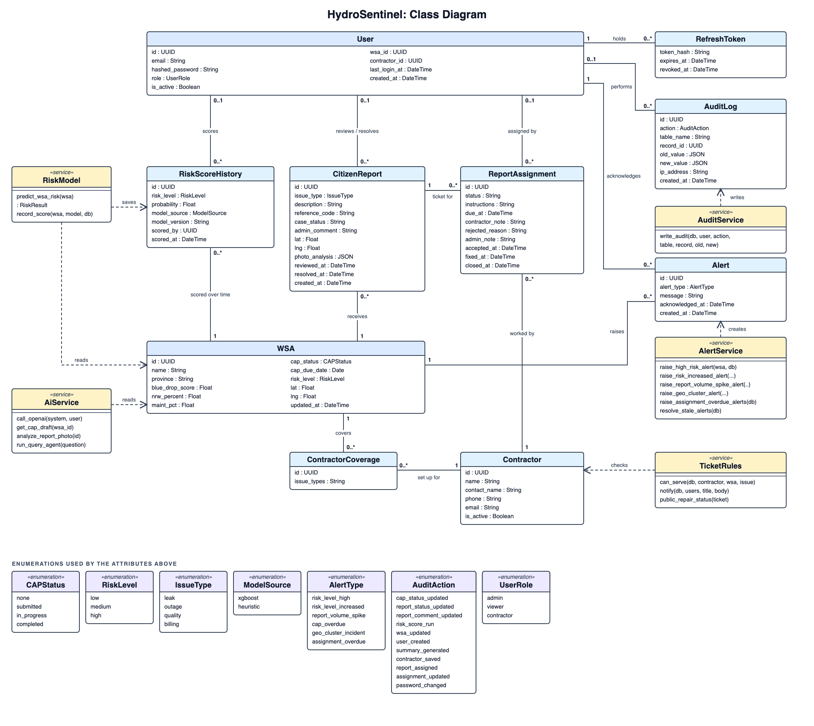
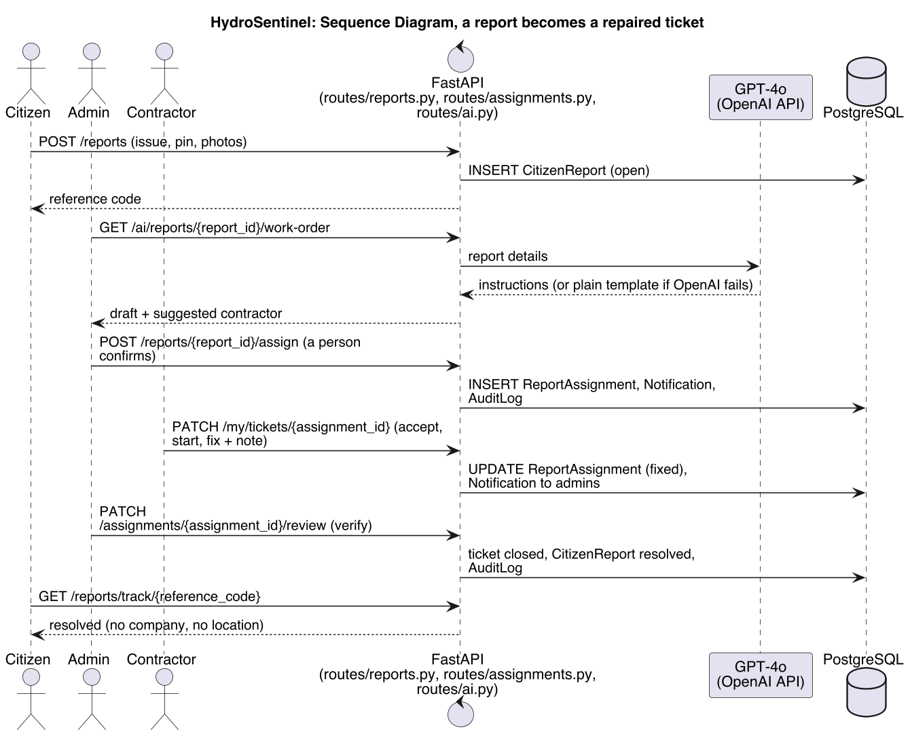
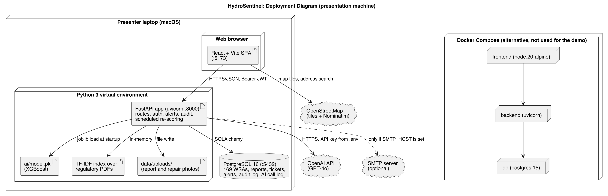
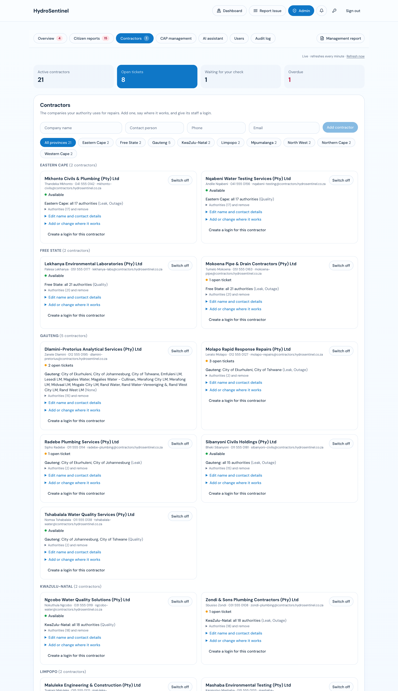
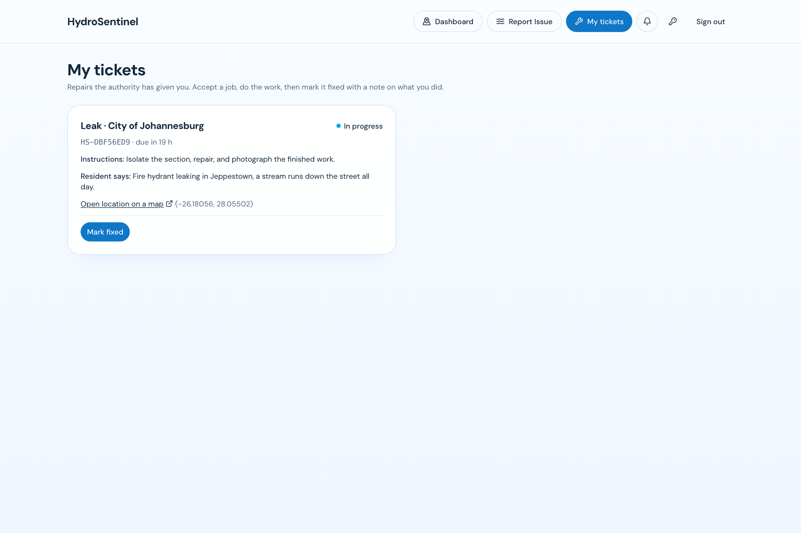
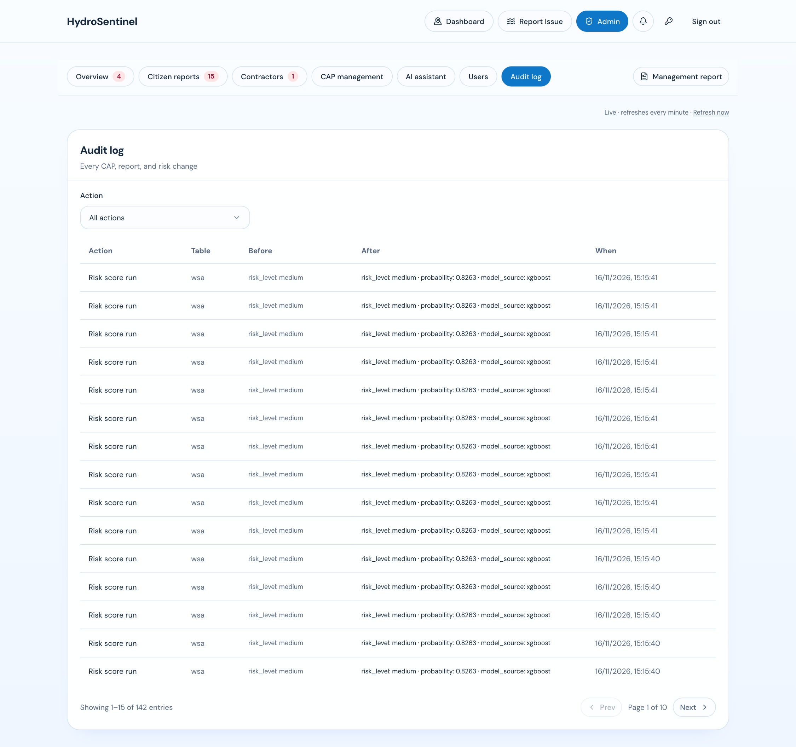
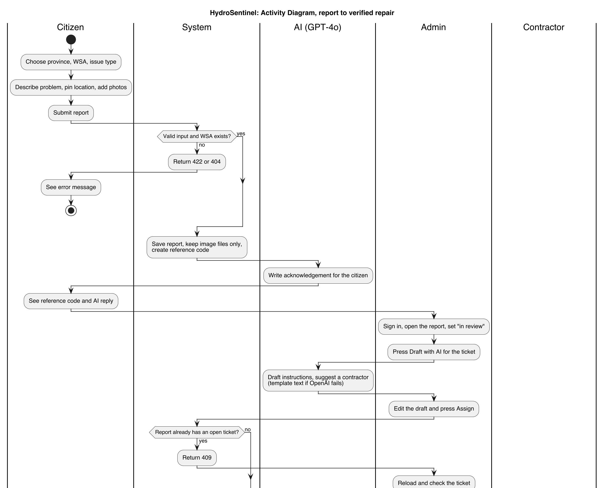
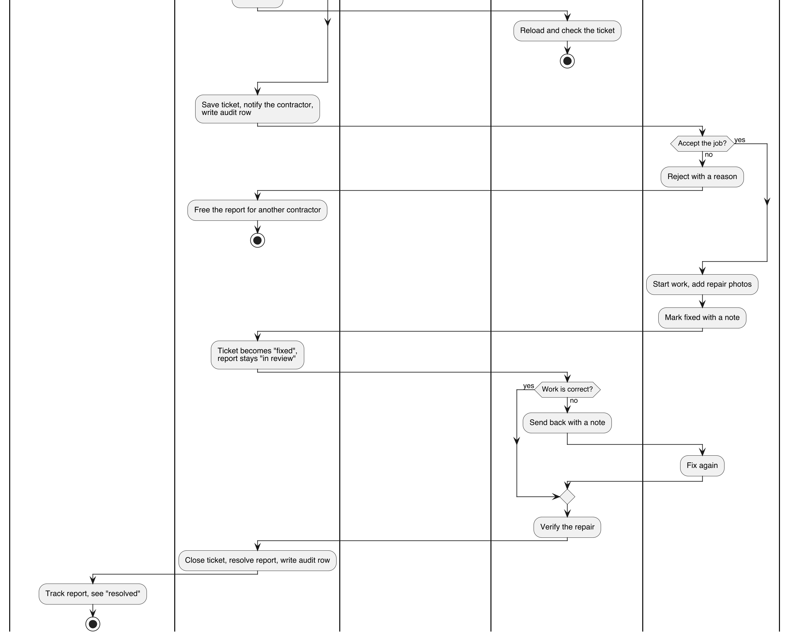

Q3.1 Use-case diagram
Who does what.

Actor = a person or system using HydroSentinel. Include = needed first. Extend = an optional step.8
Audit data sits in long PDFs. Residents have no simple way to report a fault and follow it up. Authorities hire contractors but have no one view of who is fixing what.
Residents · authority and national admins · repair contractors.
One system from report to verified repair, with AI that rates risk and drafts work, and a person who always decides.
| Area | In Assignment 4 | In the final system |
|---|---|---|
| Repairs | Report, triage, CAP | Tickets: assign, accept, fix, verify. Admins can be limited to one authority |
| Contractors | No contractor side | Own page with a dashboard (week, month, 3 months), repair photos, AI job brief and fix-note helper |
| Citizens | Report and track by code | Optional email when the report is looked at and resolved |
| Risk scoring | Command line only | "Score risk now" button, and automatically every 24 hours |
| AI limit | One server's memory | Counted in the database, shared by every server |
| Admin | Tabs and tables | Search, loading screens, notifications, passwords, health check |
Emerging technology: AI. XGBoost rates each authority’s risk. GPT-4o drafts text. A person always decides.
| Requirement | Status | Feature | Test case | Evidence |
|---|---|---|---|---|
| FR-02 | Completed | Citizen report form | TC-01 | Live demonstration |
| FR-11 | Completed | Email to the citizen | TC-25 | Mail sink, test over SMTP |
| FR-12 | Completed | Contractor tickets | TC-10 | Live, end-to-end 27/27 |
| FR-04, 13 | Completed | Roles and access | TC-08, 12 | Live (403 and 404) |
| FR-10 | Completed | Scoring every 24 h | TC-23 | Test run live |
| ETR-01 | Completed | XGBoost risk score | TC-05 | Output and 89.7% |
| ETR-02 | Completed | GPT-4o drafts | TC-06 | Live demonstration |




| Check | Result |
|---|---|
| Names on diagrams exist in the code (routes, files, classes) | 54 checked, 0 mismatches |
Class diagram generated from models.py | cannot drift |
| Ticket kept in its own table, not a new case status | Deviation: tracker and CSV keep working |
| Switch-off stops new tickets only | Deviation: found in review, stranded repairs |
| One open ticket per report, enforced by PostgreSQL | Added after the design |
| Level | Passed | Failed | Unresolved |
|---|---|---|---|
| Backend (pytest, real database) | 325 | 0 | 0 |
| Frontend (Vitest) | 121 | 0 | 0 |
| End-to-end on the live system | 27 of 27 | 0 | 0 |
| User acceptance (3 testers, 4 tasks) | 12 of 12 | 0 | 0 |
On stage: bash docs/a5/run_tests_demo.sh runs the end-to-end check and the tests for the fixes in about a minute. The full suite (2 minutes) is the saved run. The browser screens are checked by hand and by the testers.
A report no longer vanishes: it becomes a ticket with an owner, a due time and a check.
The public tracker hides location and photos. A contractor sees them only for its own ticket (others return 404). A citizen's email is optional, never shown and never exported.
AI only drafts. Photos go to OpenAI only on request. A person confirms every assignment and every repair.
| Limitation I reported | What I did | Proof |
|---|---|---|
| The risk model could fail silently | Every score shows its source. /health fails if the model is missing | Test: health fails without the model |
| AI limit kept in one server's memory | Counted in the database, shared and kept across restarts | Tests: limit survives a restart |
| Scoring only on request (FR-10) | Re-scores every 24 hours, one server at a time | Tests: stale, fresh, locked |
| No scoring button (FR-08) | "Score risk now" on the CAP tab | End-to-end TC-05 |
| No email to citizens (FR-11) | Optional, three notices, no personal detail in them | 9 tests over real SMTP |
The risk model is checked on 29 held-out authorities.One authority moves the 89.7% by 3.4 points, so I also show 80.6% from cross-validation.
It is safe because the model only rates risk: a person acts on it.A low-confidence score falls back to the rule, and the source is shown.
Next: retrain as the Department publishes new audits, and track accuracy over time.The pipeline and the scheduled scoring already exist.
Defined the problem and requirements, chose the architecture, designed the ticket rules, directed and reviewed AI-assisted code, ran the tests and the user sessions.
Check the real data first (NRW was empty for all 169 authorities). Enforce the rules that matter on the server, not only in the screen.
A person always decides. A contractor can mark fixed; only the authority can verify and resolve.
| Term | Meaning | Term | Meaning |
|---|---|---|---|
| WSA | Water Service Authority: the municipal body that runs a town’s water | CAP | Corrective Action Plan: the fixes an authority must carry out |
| DWS | Department of Water and Sanitation (publishes the audits) | Blue Drop | DWS drinking-water quality score, 0 to 100 |
| NRW | Non-revenue water: water lost before it is billed | Ticket | One repair job given to a contractor for a report |
| XGBoost | The machine-learning model that rates risk | GPT-4o | OpenAI’s language model that drafts text |
| API | How the screens talk to the server | JWT | The signed token that proves who is signed in |
| SMTP | The standard way email is sent | UAT | User acceptance testing with real people |
| FR / NFR / ETR | Functional, non-functional, emerging-technology requirement | TC | Test case |
| p95 | 95 of 100 calls were faster than this | UML | Standard diagrams of a system’s design |




